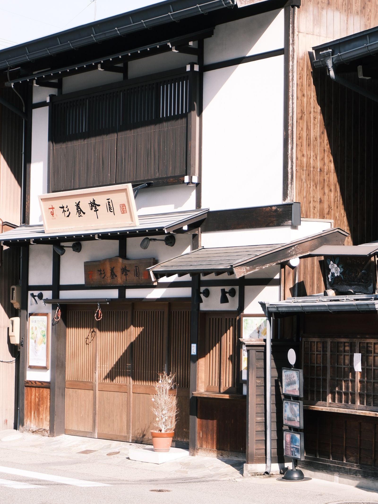
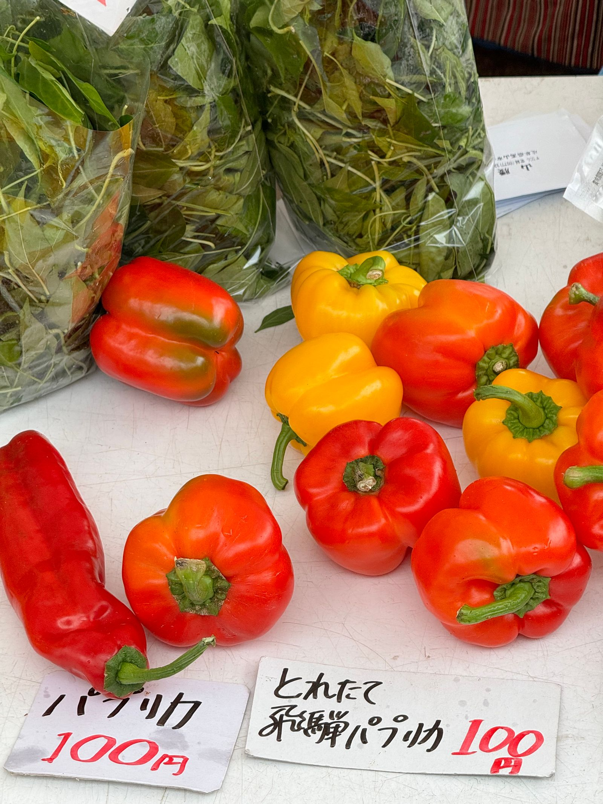
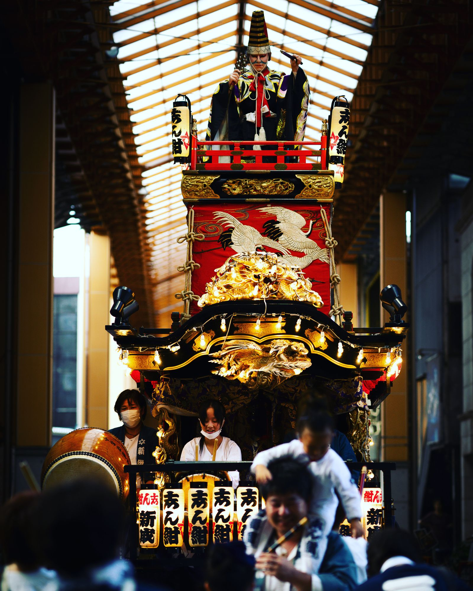
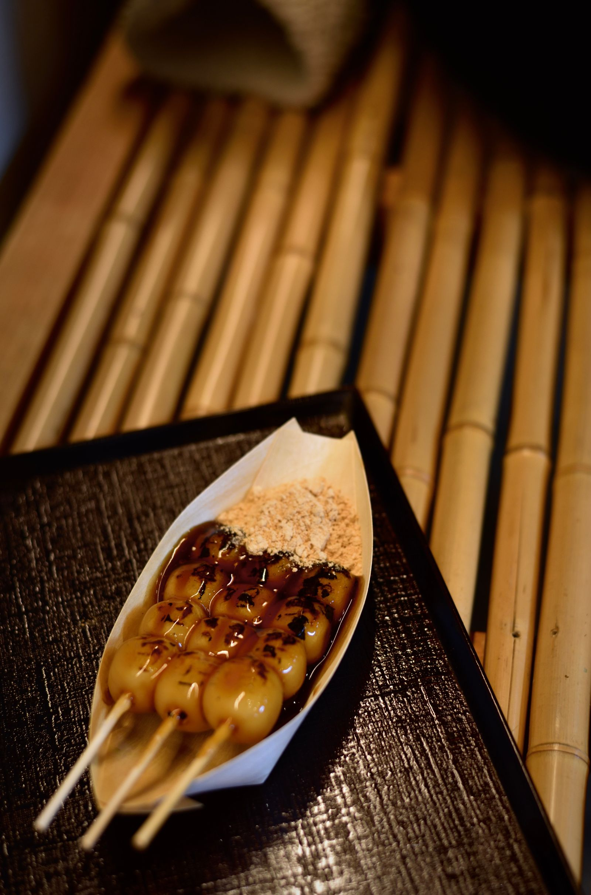
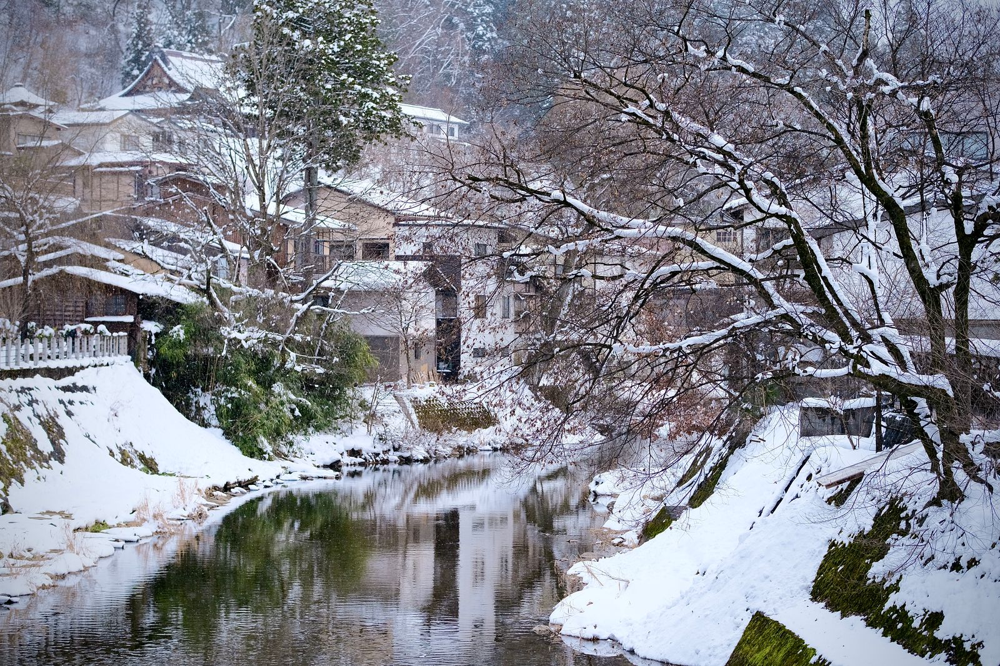

町歩き
古い町並み
江戸時代の城下町の面影を残す三町エリア。出格子の町家、軒先に下がる杉玉、用水を流れる水の音。酒蔵の試飲や手仕事の店をのぞきながら、ゆっくり歩くのがおすすめです。
- 目安時間
- 1〜2時間
- おすすめ
- 朝9時前の静かな時間帯

ABOUT
ひだ旅しおり舎は、飛騨高山の「急がない旅」を提案する小さな案内所です。
有名スポットを駆け足で巡るのではなく、朝市で地元の人と言葉を交わしたり、町家の軒先で湯気の立つ団子をほおばったり。そんな何気ない時間こそ、この町のいちばんの魅力だと考えています。
地元スタッフが歩いて選んだ見どころと、季節ごとのモデルコースをご紹介します。
SPOTS

町歩き
江戸時代の城下町の面影を残す三町エリア。出格子の町家、軒先に下がる杉玉、用水を流れる水の音。酒蔵の試飲や手仕事の店をのぞきながら、ゆっくり歩くのがおすすめです。

朝の楽しみ
宮川沿いに毎朝並ぶ露店では、採れたての野菜や漬物、季節の果物が手に入ります。「どこから来たの？」と気さくに声をかけてくれるのも朝市の魅力。早起きしてでも訪れたい場所です。

春と秋の祭り
春と秋に行われる高山祭では、精巧な彫刻や飾り金具で彩られた屋台が町を巡ります。祭りの時期以外も、屋台の展示施設でその美しさを間近に見ることができます。

GOURMET
さっと炙った飛騨牛を、えびせんべいのお皿でいただく食べ歩きの定番。口の中でとろける甘い脂をぜひ。
高山では「みたらし」ではなく「みだらし」。甘くない醤油味で、香ばしい焼き目が後を引きます。
細ちぢれ麺にあっさり醤油スープ。地元の人にも観光客にも愛される、高山のソウルフードです。

ONSEN
高山から車で約1時間。北アルプスを望む露天風呂で、歩き疲れた足をゆっくりほぐしてください。しんしんと雪が降る中で入る露天風呂は格別です。
MODEL COURSE
りんごジュースを片手に、露店をのんびり見て回ります。
観光客が増える前の静かな町並みは、写真撮影にも最適。
食べ歩きのあとは、町家カフェでひと休み。
祭りの時期でなくても、屋台の細工をじっくり鑑賞できます。
露天風呂と夕食で、1日の疲れを癒やします。
NEWS
ACCESS
名古屋駅から特急で約2時間20分
富山駅から特急で約1時間30分
新宿から約5時間30分
名古屋から約2時間40分
中部縦貫自動車道 高山ICから約10分
※所要時間は目安です。最新の情報は各交通機関でご確認ください。
CONTACT
ツアーのご予約や旅のご相談は、お気軽にお問い合わせください。